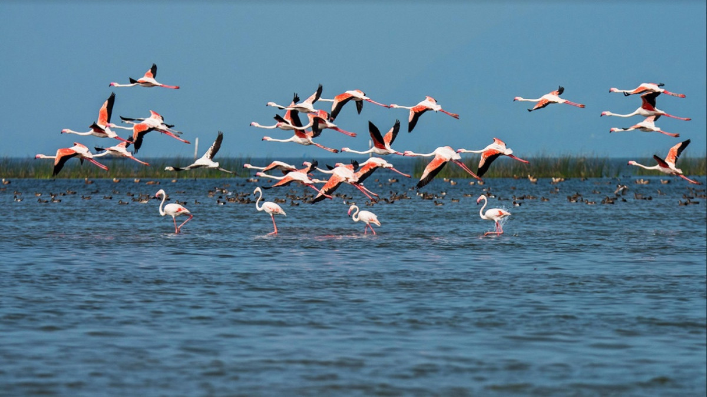

WildLife of Odisha
Home
Protected Areas
programs
Feedback
Others
National parks in odihsa
Forest tourist places
About Wild life Odisha

“Home to a considerable percentage of wildlife in India, the state of Odisha has also come to the forefront to fight this evil. The Odisha Wildlife Conservation Organisation came into existence in 1974 following the Wildlife Protection Act in 1972. In 1976, the OWC was redefined by appointing the Chief Wildlife Warden as the conservator of forests. “The state government has taken endless number of initiatives to protect the wildlife of the state. To save the 54 endangered species of the wild animals of the state, about 10.37 per cent of the total forest area of the state has been converted into a protected area. This protected cover is 4.1 per cent of the total geographical area of the state,” says Mahapatra. The first sanctuary established under the Wildlife Protection Act, 1972 was the Bhitar Kanika Wildlife Sanctuary. Other sanctuaries which followed were Satkosia Gorge in 1976, Hadgah in 1978, Simplipal and Nandankanan in 1979, Baisipalli and Kotagarh in 1981, Chandaka, Karlapat and Khalasuni in1982, Kuldiha and Balukhand in 1984, Lakhari and Debrigarh in1985, Badrama and Chilika-Nalaban in 1987, Sunabeda in1988 and Gahirmatha Marine Sanctuary in 1997. Cyclone Fani effect on flora and fauna, and the aftermath Around 60,00,000 trees were uprooted, mostly casuarina and cashew. The crowns of tamarind, tamarind, karanja, polanga, neem and other trees were also severely damaged. Wide range of fauna, including 2,000 spotted deer or chital, birds and other species such as jackals, hyenas, jungle cats, snake and monitor lizards were affected by the cyclonic storm. Official figures state the cyclone killed 2,650 large animals, 3,631 small animals and 53,26,905 poultry birds. “Chilka lagoon had only two active mouths – the point where it meets the sea before cyclone Fani. Four new mouths have opened due to wave energy with high tidal prism and saline ingress to the lake. The lake is home to more to 150 species of migratory birds, and endangered plant and animal species, apart from a source of livelihood for about 1.5 lakh fishermen in the region. “In Bhubaneshwar, Nandankanan Zoological Park, animal enclosures have been destroyed and hundreds of trees uprooted. With the zoo shut indefinitely, monkeys have begun entering residential areas looking for food and water,” Mahapatra said. How government works to alleviate disaster impact on fauna The first and foremost responsibility of disaster management teams is to create awareness about the impending danger. Right before the landfall, several awareness camps were organised by forest officials and several NGOs. Members of eco-development committee from nearby villages convinced people to take care of animals. He says the authorities are fully equipped to conserve wildlife using highest level of technology and manpower. NGOs working towards welfare of animals are trained and equipped to handle any situation. Mahapatra is currently working in Angul with People for Animals for a campaign aimed at saving snakes in the region. “‘Save Snakes’ works to reduce negative interactions between humans and snakes by implementing mitigation strategies leading to peaceful coexistence. One of the greatest benefits of Odisha‘s vast expanses of the unspoiled natural landscape has been its ability to offer a protected yet natural habitat to the state’s incredible wildlife. Apart from the Nandankanan Zoo and sanctuary and Similipal National Park, there are at least eighteen smaller sanctuaries that are home to a wide variety of flora and fauna, birdlife reptiles and water creatures. Some of the most important experiments of wildlife conservation are taking place in this natural habitat, giving the tourists an excellent opportunity to see nature’s bounty, propagated in an environment that is as healthy as it is beautiful. Nandankanan
A short distance from the capital city, Bhubaneswar, the Nandankanan zoo lies in the splendid environs of the Chandaka forest, along the rippling waters of the Kanjia lake. It also contains a botanical garden and part of it has been declared as a sanctuary. Famous for its white tiger population, Nandankanan or the Garden of Gods has become a hot family favorite, with visitors getting an excellent opportunity to enjoy seeing these regal animals in their natural glory- in an environment conducive to their growth. Over 67 kinds of mammals, 18 varieties of reptiles and 81 species of birds coexist in the deeply forested boundaries. The zoo enjoys an excellent reputation internationally, for successfully breeding black panthers, Gharial Crocodiles and white tigers in captivity. Top 12 Wildlife Sanctuaries In Odisha Odisha is a state that is widely famous for its diversity of wildlife as well as depth. This state is a shelter to numerous exotic and rarest species in the wildlife. Let us start our virtual wildlife tour in Odisha that welcomes wholeheartedly every type of adventurous traveler. We are going to enlist brief details about the bewildering wildlife sanctuaries in Odisha.
Debrigarh Wildlife sanctuary – Encounter The Diverse Species Of Animals
Sunabeda Wildlife Sanctuary – Witness The Amazing Tiger Reserve
Nandankanan Wildlife Sanctuary –Enjoy The Exotic Safari Ride & Wildlife
Karlapat Sanctuary – Eyewitness The Remarkable Flora And Fauna
Hadagarh Wildlife Sanctuary – Experience The Spectacular Beauty Of Nature
Kotagarh Wildlife Sanctuary – Get Magnificent View Of Colourful Birds
Ushakothi Wildlife Sanctuary – Watch The Beauty Of Tigers
Chilika Wildlife Sanctuary – Capture A Spectacular View Of Amazing Birds
Gahirmatha Marine Sanctuary – Get A Close Look At The Largest Turtles
Kuldiha Wildlife Sanctuary – View The Endangered Bird Species
Tikarpada Wildlife Sanctuary – Witness The Amazing Wildlife
Bhitarkanika Wildlife Sanctuary, Kendrapara District – Watching Crocodiles Can Be Fun
The project is designed and submitted by Mr Surya Kanta Rout